Ministry of Tourism Lebanon
DISCOVER LEBANON
Baalbek–Hermel is Lebanon's largest governorate by area, stretching across the northeastern part of the country. It is bordered by Syria to the north and east, and sits at the upper end of the fertile Beqaa Valley — one of the most strategically and agriculturally important regions in the entire Middle East.
The landscape is dramatic and varied. The wide open floor of the Beqaa Valley gives way to the towering Anti-Lebanon mountain range to the east, while the western slopes of Mount Lebanon frame the horizon to the west. In the north, the terrain becomes more arid and rugged, transitioning into the semi-desert landscape of the Hermel region, dotted with ancient ruins and sparse villages.
The climate here is sharply continental — scorching dry summers and cold, often snowy winters. This stark contrast between seasons gives Baalbek–Hermel its raw, timeless character, and makes it a region that looks and feels unlike anywhere else in Lebanon.
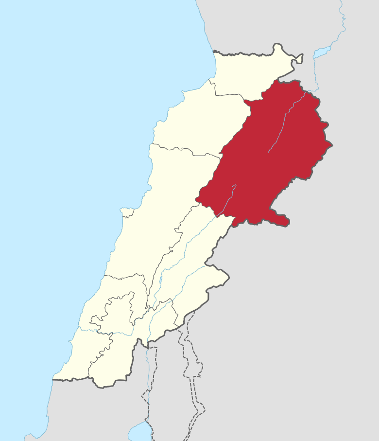
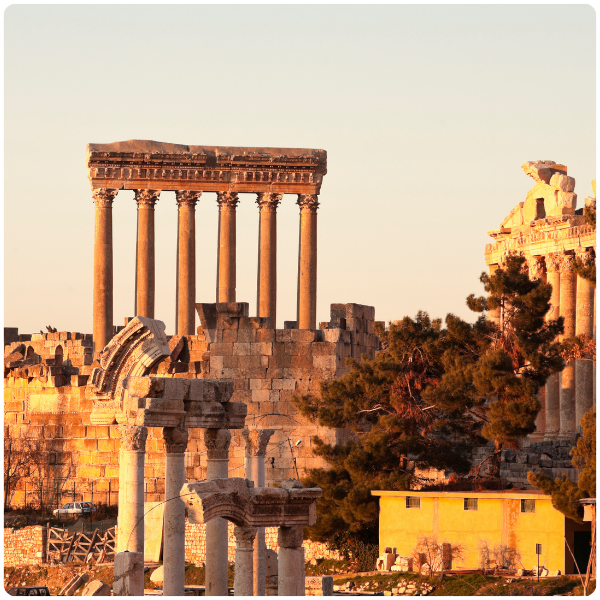
The crown jewel of the governorate and one of the most awe-inspiring cities in the entire Arab world. Baalbek is home to some of the best-preserved Roman temple complexes on Earth, drawing historians, archaeologists, and travelers from every corner of the globe. Walking through its ancient streets is an experience that stays with you for life.
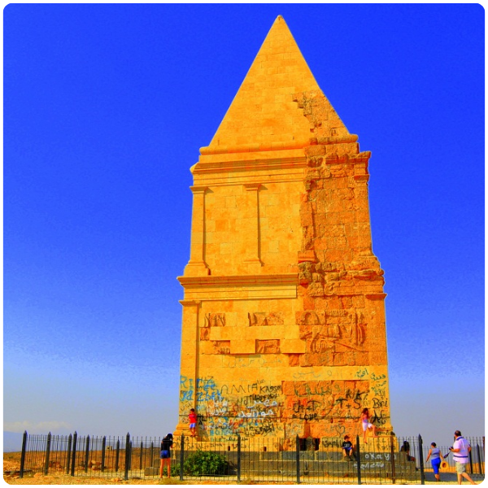
Hermel is a rugged, semi-arid town at the far northern tip of Lebanon, close to the Syrian border. Known for its fierce landscape and proud tribal heritage, it sits near the Assi (Orontes) River and is home to the mysterious Hermel Pyramid — an ancient funerary monument whose origins still puzzle historians.
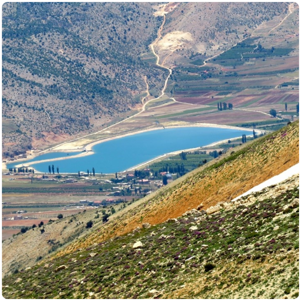
Nestled high in the mountains above Baalbek, Yammouneh is one of Lebanon's most spiritually significant sites. It sits beside a sacred lake fed by mountain springs and has been a place of pilgrimage for centuries. In summer, the scenery is breathtaking — cool, green, and utterly peaceful.
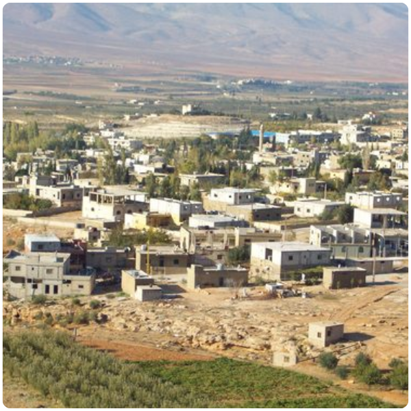
A quiet village in the northern Beqaa, Labweh is historically significant as the source of the Orontes River — one of the great rivers of the ancient Near East. Surrounded by flat farmland and framed by mountains on both sides, it offers a glimpse into the slower, agricultural soul of the region.
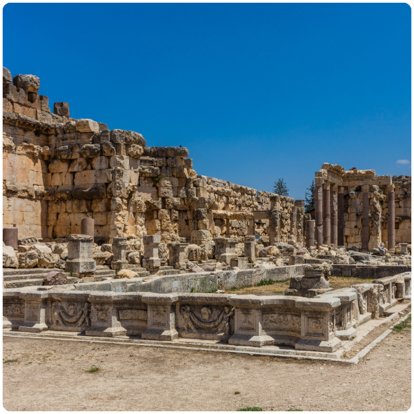
The Temple of Jupiter, the Temple of Bacchus, and the Temple of Venus together form one of the most remarkable Roman archaeological sites in the world. The Temple of Jupiter alone once stood on 54 columns, each over 20 meters tall. Today, six still stand — and they are enough to make you feel impossibly small. A UNESCO World Heritage Site and Lebanon's most iconic landmark.
Standing alone in the open landscape north of Hermel, this ancient stone pyramid is one of Lebanon's most enigmatic monuments. Dating back over 2,000 years, its exact purpose remains debated — some believe it was a royal funerary monument, others a hunting trophy marker. Whatever its origin, it is hauntingly beautiful against the vast open sky.
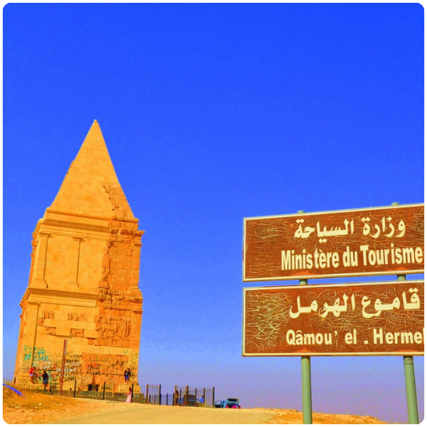
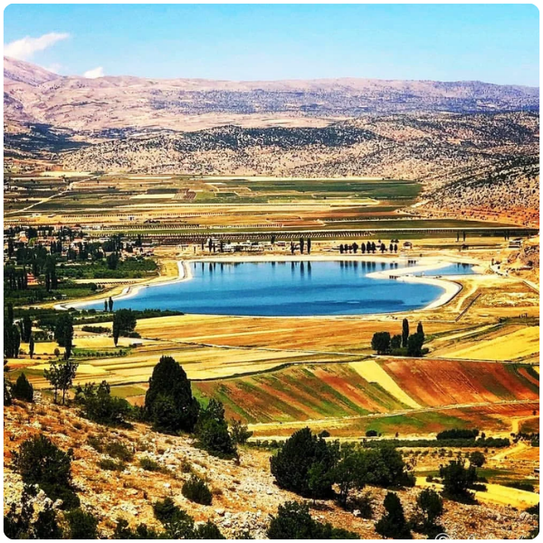
High above the Beqaa Valley, the lake at Yammouneh is one of Lebanon's most serene natural sanctuaries. Fed by mountain springs and surrounded by rolling highland meadows, it has been a site of religious pilgrimage for both Christians and Muslims for centuries. A perfect destination for those seeking quiet, beauty, and a connection to something ancient.
Every summer, the ancient temples of Baalbek come alive as the backdrop for one of the most prestigious performing arts festivals in the Arab world. Since 1956, world-class musicians, orchestras, and performers have taken the stage before the towering Roman columns. Watching a concert here — with Jupiter's temple glowing behind the performers — is an experience unlike anything else on Earth.
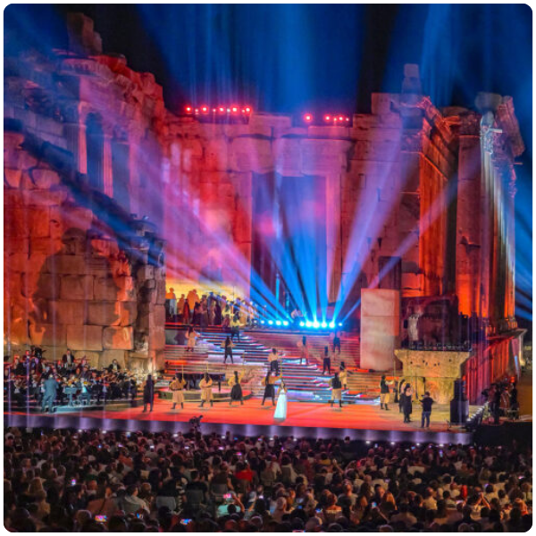
Baalbek city lies approximately 85 km northeast of Beirut — about an 1.5 to 2-hour drive through the scenic mountain pass and down into the Beqaa Valley. The journey itself is one of the most dramatic road trips in Lebanon.
All international arrivals land at Beirut–Rafic Hariri International Airport. From Beirut, you head east through the mountains via the Dahr el-Baydar pass before descending into the Beqaa Valley toward Baalbek.
Take the Beirut–Damascus Highway east, then branch north at Chtaura toward Baalbek. A private car gives you the freedom to explore the wider governorate, including Hermel and the highland villages.
Shared minibuses and service taxis depart regularly from Cola Transport Hub in Beirut heading to Baalbek. It is the most affordable option and well-used by locals.
The mountain pass at Dahr el-Baydar can be closed due to heavy snowfall in winter. Always check road conditions between December and February before making the journey.
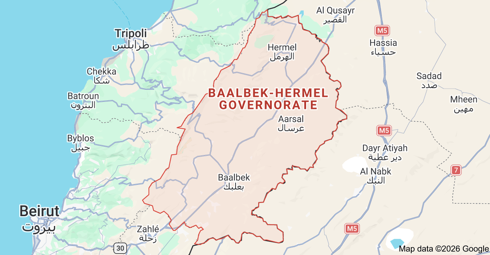
Baalbek–Hermel does not whisper. It speaks in the language of empires, in stone columns that have outlasted centuries of conquest, and in a landscape so grand it humbles even the most seasoned traveler.
Stand before the Temple of Jupiter at sunrise, when the golden light hits the remaining columns and the entire site seems to glow from within.
Wander through the Baalbek souk and pick up fresh produce, local honey, and hand-crafted goods from vendors whose families have traded here for generations.
Drive north to Hermel and find the ancient pyramid standing alone against a vast, quiet sky, one of Lebanon's most underrated monuments.
Hike up to Yammouneh and sit beside the sacred lake in the cool highland air, far from the noise of the valley below.
If visiting in summer, secure tickets to the Baalbek International Festival, a once-in-a-lifetime concert experience set against 2,000-year-old Roman ruins.
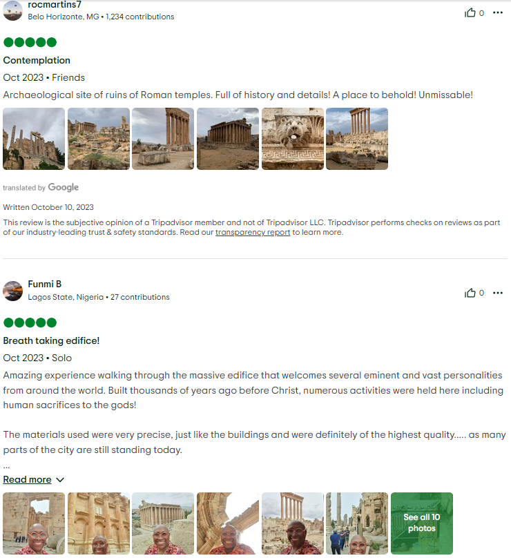